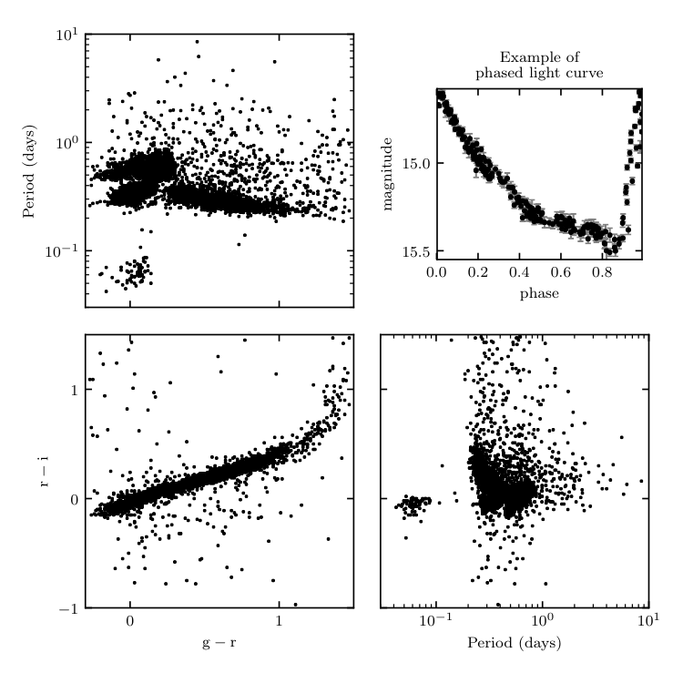

Phased LINEAR Light Curve¶
Plot the colors, magnitudes, and periods of the LINEAR variable stars, as well as the phased light curve of a single LINEAR object.
Downloading http://www.astro.washington.edu/users/ivezic/linear/allDataFinal/allLINEARfinal_targets.dat
[= ] 25.0kb / 1001.2kb
[== ] 50.1kb / 1001.2kb
[=== ] 75.1kb / 1001.2kb
[==== ] 100.1kb / 1001.2kb
[===== ] 125.2kb / 1001.2kb
[====== ] 150.2kb / 1001.2kb
[======= ] 175.2kb / 1001.2kb
[======== ] 200.2kb / 1001.2kb
[========= ] 225.3kb / 1001.2kb
[========== ] 250.3kb / 1001.2kb
[=========== ] 275.3kb / 1001.2kb
[============ ] 300.4kb / 1001.2kb
[============= ] 325.4kb / 1001.2kb
[============== ] 350.4kb / 1001.2kb
[=============== ] 375.5kb / 1001.2kb
[================ ] 400.5kb / 1001.2kb
[================= ] 425.5kb / 1001.2kb
[================== ] 450.5kb / 1001.2kb
[=================== ] 475.6kb / 1001.2kb
[==================== ] 500.6kb / 1001.2kb
[===================== ] 525.6kb / 1001.2kb
[====================== ] 550.7kb / 1001.2kb
[======================= ] 575.7kb / 1001.2kb
[======================== ] 600.7kb / 1001.2kb
[========================= ] 625.8kb / 1001.2kb
[========================== ] 650.8kb / 1001.2kb
[=========================== ] 675.8kb / 1001.2kb
[============================ ] 700.8kb / 1001.2kb
[============================= ] 725.9kb / 1001.2kb
[============================== ] 750.9kb / 1001.2kb
[=============================== ] 775.9kb / 1001.2kb
[================================ ] 801.0kb / 1001.2kb
[================================= ] 826.0kb / 1001.2kb
[================================== ] 851.0kb / 1001.2kb
[=================================== ] 876.1kb / 1001.2kb
[==================================== ] 901.1kb / 1001.2kb
[===================================== ] 926.1kb / 1001.2kb
[====================================== ] 951.2kb / 1001.2kb
[=======================================] 976.2kb / 1001.2kb
[========================================] 1001.2kb / 1001.2kb
[=========================================] 1001.2kb / 1001.2kb
Downloading http://www.astro.washington.edu/users/ivezic/linear/allDataFinal/allLINEARfinal_dat.tar.gz
[= ] 410.9kb / 16.05Mb
[== ] 821.9kb / 16.05Mb
[=== ] 1.20Mb / 16.05Mb
[==== ] 1.61Mb / 16.05Mb
[===== ] 2.01Mb / 16.05Mb
[====== ] 2.41Mb / 16.05Mb
[======= ] 2.81Mb / 16.05Mb
[======== ] 3.21Mb / 16.05Mb
[========= ] 3.61Mb / 16.05Mb
[========== ] 4.01Mb / 16.05Mb
[=========== ] 4.41Mb / 16.05Mb
[============ ] 4.82Mb / 16.05Mb
[============= ] 5.22Mb / 16.05Mb
[============== ] 5.62Mb / 16.05Mb
[=============== ] 6.02Mb / 16.05Mb
[================ ] 6.42Mb / 16.05Mb
[================= ] 6.82Mb / 16.05Mb
[================== ] 7.22Mb / 16.05Mb
[=================== ] 7.62Mb / 16.05Mb
[==================== ] 8.03Mb / 16.05Mb
[===================== ] 8.43Mb / 16.05Mb
[====================== ] 8.83Mb / 16.05Mb
[======================= ] 9.23Mb / 16.05Mb
[======================== ] 9.63Mb / 16.05Mb
[========================= ] 10.03Mb / 16.05Mb
[========================== ] 10.43Mb / 16.05Mb
[=========================== ] 10.84Mb / 16.05Mb
[============================ ] 11.24Mb / 16.05Mb
[============================= ] 11.64Mb / 16.05Mb
[============================== ] 12.04Mb / 16.05Mb
[=============================== ] 12.44Mb / 16.05Mb
[================================ ] 12.84Mb / 16.05Mb
[================================= ] 13.24Mb / 16.05Mb
[================================== ] 13.64Mb / 16.05Mb
[=================================== ] 14.05Mb / 16.05Mb
[==================================== ] 14.45Mb / 16.05Mb
[===================================== ] 14.85Mb / 16.05Mb
[====================================== ] 15.25Mb / 16.05Mb
[=======================================] 15.65Mb / 16.05Mb
[========================================] 16.05Mb / 16.05Mb
[=========================================] 16.05Mb / 16.05Mb
# Author: Jake VanderPlas <vanderplas@astro.washington.edu>
# License: BSD
# The figure produced by this code is published in the textbook
# "Statistics, Data Mining, and Machine Learning in Astronomy" (2013)
# For more information, see http://astroML.github.com
import numpy as np
from matplotlib import pyplot as plt
from astroML.datasets import fetch_LINEAR_sample
#------------------------------------------------------------
# Get data for the plot
data = fetch_LINEAR_sample()
# Compute the phased light curve for a single object.
# the best-fit period in the file is not accurate enough
# for light curve phasing. The frequency below is
# calculated using Lomb Scargle (see chapter10/fig_LINEAR_LS.py)
id = 18525697
omega = 10.82722481
t, y, dy = data[id].T
phase = (t * omega * 0.5 / np.pi + 0.1) % 1
# Select colors, magnitudes, and periods from the global set
targets = data.targets[data.targets['LP1'] < 2]
r = targets['r']
gr = targets['gr']
ri = targets['ri']
logP = targets['LP1']
#------------------------------------------------------------
# plot the results
fig = plt.figure(figsize=(8, 8))
fig.subplots_adjust(hspace=0.1, wspace=0.1,
top=0.95, right=0.95)
ax = fig.add_axes((0.62, 0.62, 0.3, 0.25))
plt.errorbar(phase, y, dy, fmt='.', color='black', ecolor='gray', lw=1)
plt.ylim(plt.ylim()[::-1])
plt.xlabel('phase')
plt.ylabel('magnitude')
ax.yaxis.set_major_locator(plt.MultipleLocator(0.5))
plt.title("example of\nphased light curve", fontsize=14)
ax = fig.add_subplot(223)
ax.plot(gr, ri, '.', color='black', markersize=2)
ax.set_xlim(-1.5, 1.7)
ax.set_ylim(-1.0, 1.9)
ax.xaxis.set_major_locator(plt.MultipleLocator(1.0))
ax.yaxis.set_major_locator(plt.MultipleLocator(1.0))
ax.set_xlabel('g-r')
ax.set_ylabel('r-i')
ax = fig.add_subplot(221, yscale='log')
ax.plot(gr, 10 ** logP, '.', color='black', markersize=2)
ax.set_xlim(-1.5, 1.7)
ax.set_ylim(1E-2, 1E2)
ax.xaxis.set_major_locator(plt.MultipleLocator(1.0))
ax.xaxis.set_major_formatter(plt.NullFormatter())
ax.set_ylabel('principal period (days)')
ax = fig.add_subplot(224, xscale='log')
ax.plot(10 ** logP, ri, '.', color='black', markersize=2)
ax.set_xlim(1E-2, 1E2)
ax.set_ylim(-1.0, 1.9)
ax.yaxis.set_major_formatter(plt.NullFormatter())
ax.yaxis.set_major_locator(plt.MultipleLocator(1.0))
ax.set_xlabel('principal period (days)')
plt.show()